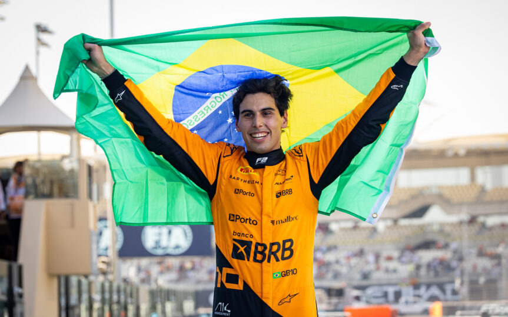
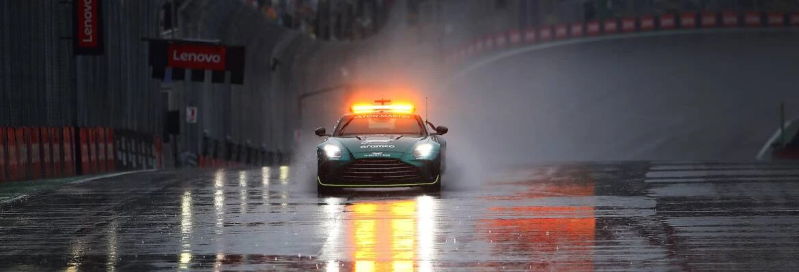
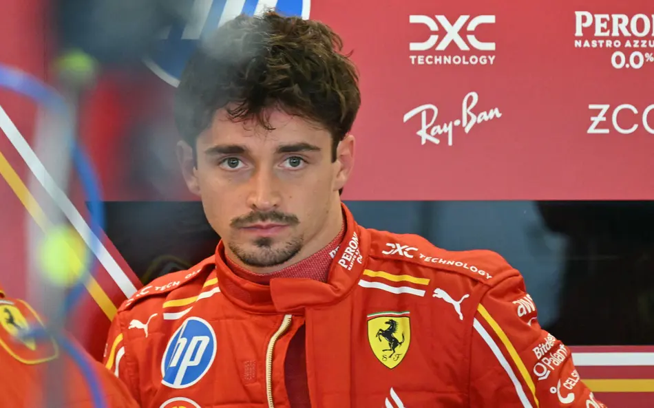
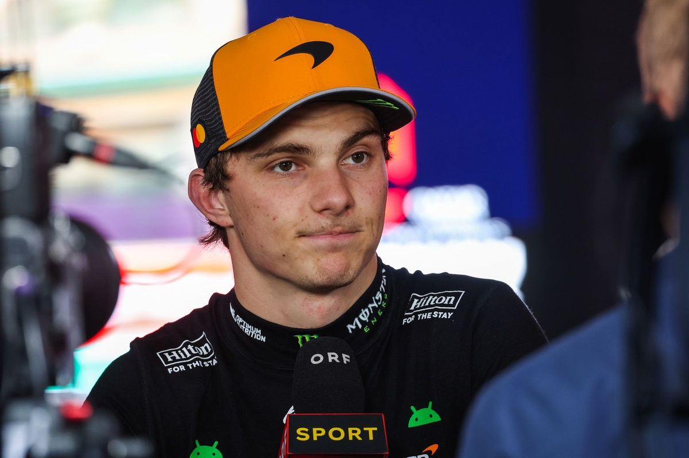
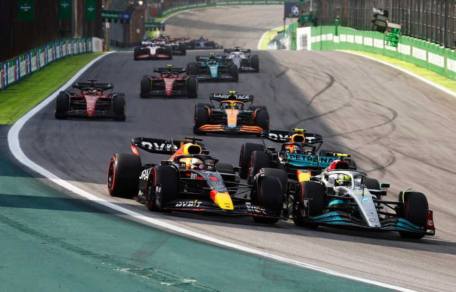

veja mais:

Bortoleto revela empolgação para correr diante do meu povo em Interlagos
Depois de oito anos, Interlagos irá ter um piloto brasileiro na Fórmula 1 em 2025.
Leia mais

Verstappen revela acerto agressivo por trás da recuperação na temporada
Recentes atualizações da Red Bull Racing o colocaram novamente na disputa pelo título na Fórmula 1.
Leia mais

Previsão de chuva em Interlagos promete agitar disputa pelo campeonato
O GP de São Paulo de Fórmula 1 no próximo final de semana, promete ser mais uma edição imprevisível, com a previsão de chuva influenciando diretamente a disputa pelo campeonato.
Leia mais

Leclerc mira pódio em Interlagos e celebra boa fase da Ferrari
Sonhando com a primeira vitória na atual temporada da Fórmula 1, o piloto Charles Leclerc, da Ferrari, avaliou que a escuderia italiana adotará a mesma abordagem das provas anteriores e acredita ser possível conquistar um lugar no pódio do Grande Prêmio de São Paulo, em Interlagos.
Leia mais

Piastri pensando na oportunidade de ir para Aston Martin!
Australiano perdeu a liderança do campeonato e vem em uma sequência de corridas ruins, após terminar apenas em quinto no GP do México, Piastri está apenas um ponto atrás de Norris.
Leia mais

Horários e onde assistir ao GP de São Paulo!
A 21a etapa do campeonato acontece em solo brasileiro entre os dias 07, 08 e 09 de Novembro e será a primeira corrida em casa de Bortoleto
Leia mais